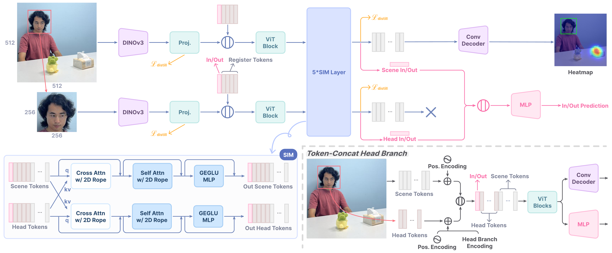

Abstract
Gaze target estimation, the task of predicting where a person is looking in a scene, is crucial to understanding human attention and intent. It is a challenging task that combines high-level understanding of global scene semantics and precise spatial reasoning using human appearance (e.g. pose, eye orientation). As a result, human-level performance remains elusive for existing models, limiting their practical application. To this end, we propose PaGE (Practical Gaze Estimator), a gaze estimation model that explicitly models the complex interaction between scene and head features. Using a PaGE model with a large ViT-H+ backbone as the teacher, we further distill student models with lighter backbones on a much larger and more diverse unlabeled dataset. The architectural improvements and novel training recipe allow PaGE to achieve state-of-the-art performance on several gaze estimation tasks, outperforming humans in 7 out of 9 metrics while reducing the human–AI gap by at least 60% in the remaining 2. The distilled student models retain most of the teacher's performance while being lightweight enough for practical deployment on robots and consumer devices.
Method
PaGE builds upon DINOv3 with a Scene-head Interaction Module (SIM) that uses cross-attention between scene and head branches to model inter-branch feature interaction in a ViT-native manner. Training follows a two-stage recipe: decoder-only training with a frozen backbone, followed by supervised finetuning (SFT) of the full model. Lightweight student models are trained via token-level feature distillation from a PaGE ViT-H+ teacher on 1.17M unlabeled head crops from MPII and OpenImages V7.
